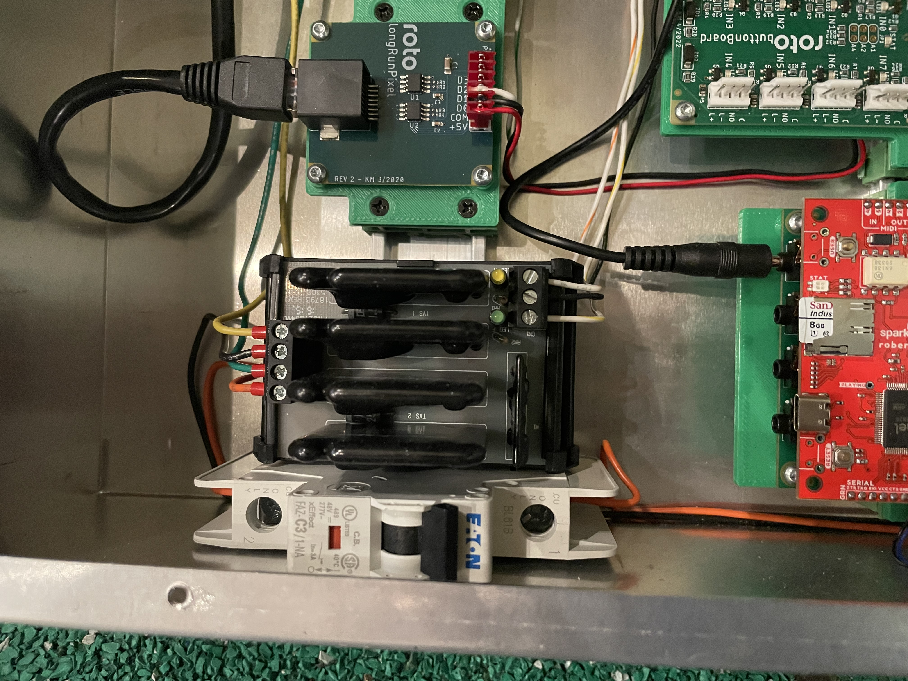
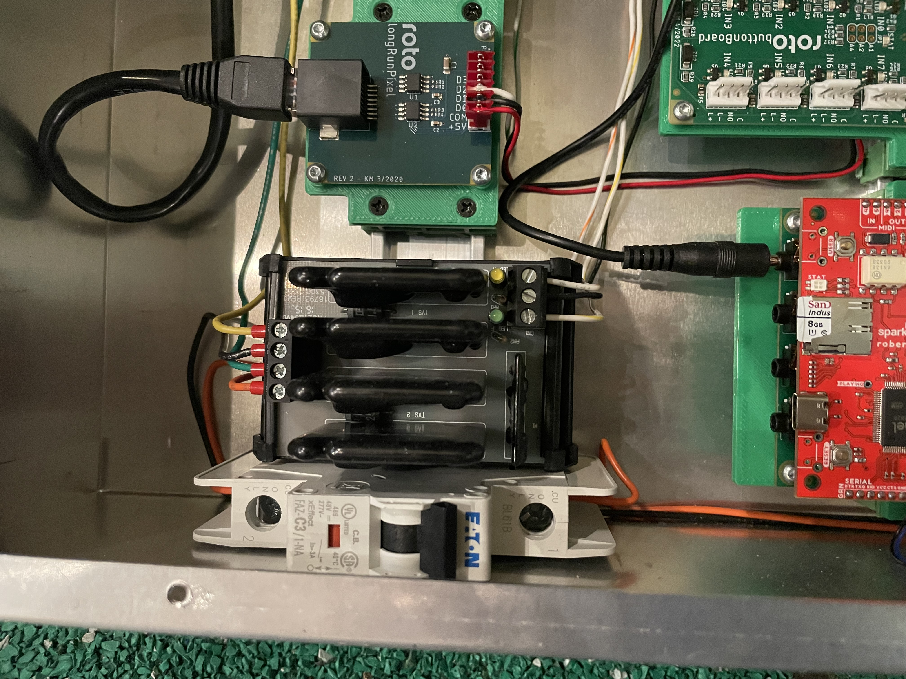
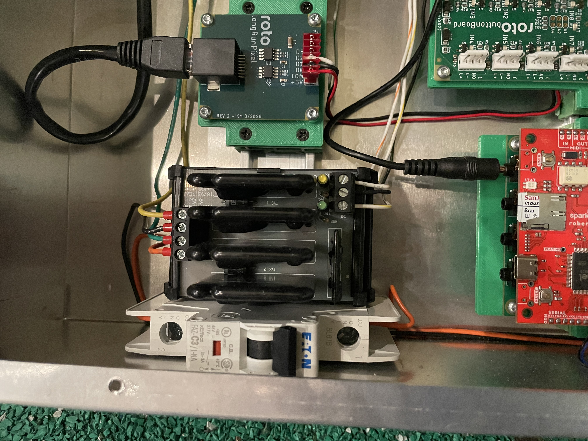
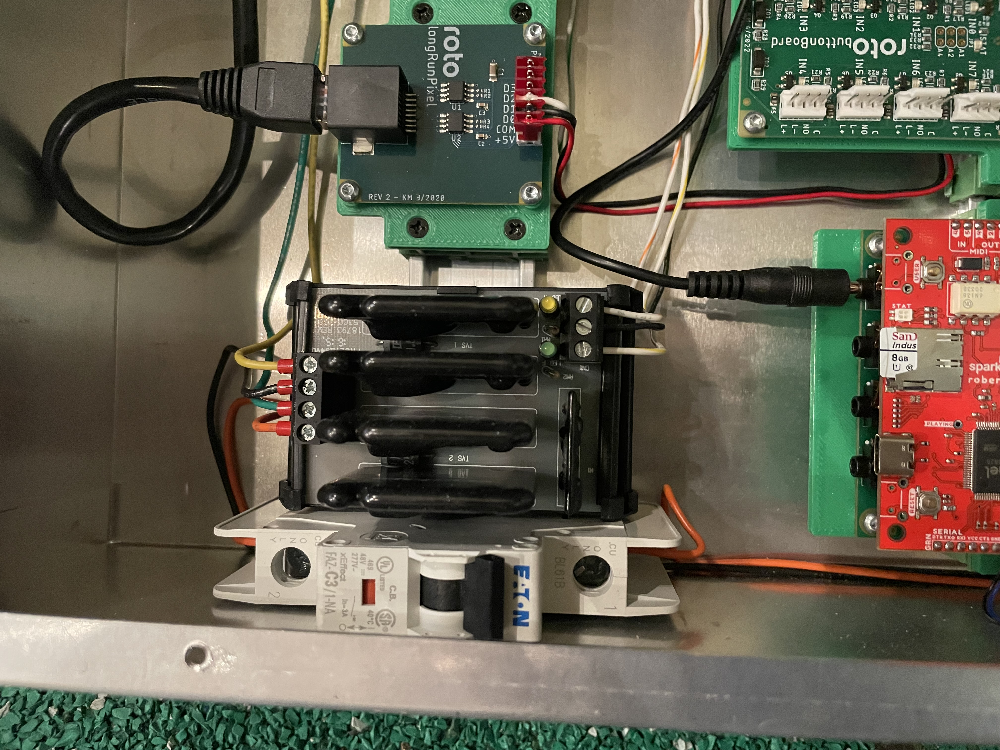
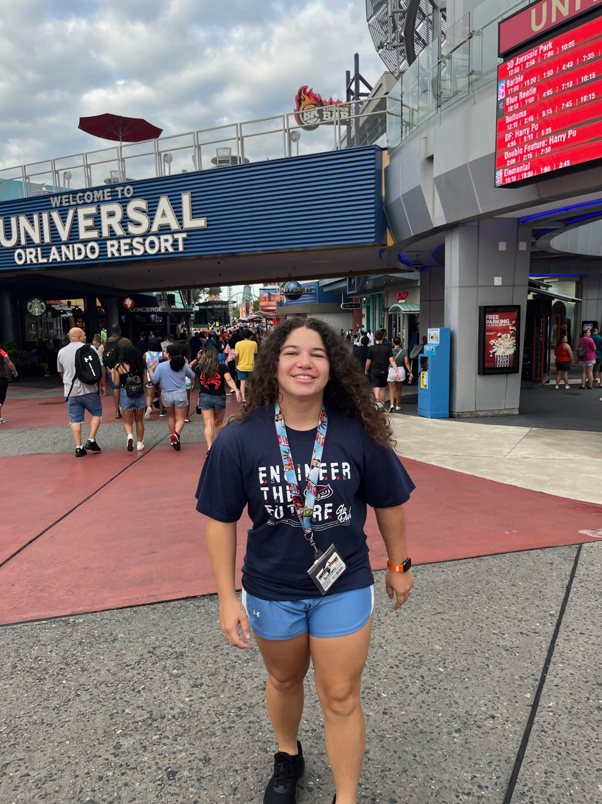

| United States | Latin America | Europe | Mediterranean |
|---|---|---|---|
| Washington State x4 | Panama x5 | England x2 | Cyprus |
| Georgia x2 | Honduras | ||
| New York x2 | Mexico x5 | ||
| North Carolina | Belize | ||
| South Carolina | Puerto Rico x2 | ||
| Washingon DC | Bahamas x4 | ||
| Maryland | |||
| Virginia | |||
| New Jersey |
Some personal projects I've done, outside of work and school, are robots. My most recent one is named Toby. Here is an image of him:

Toby is a robot on wheels essentially. He also has a camera that I use an app to connect to my iPad, as you see in the picture. It took me 4 hours to build him, then after building him it took 2 hours to program. To me, 6 hours total is very little time for a project. If I have the time that day, I would sit at my desk for 12 hours just to finish. This happens most when I build legos. I find it difficult to take breaks when I start projects.
Another thing I enjoy doing is visiting theme parks! For the past 2 years, I've had an annual pass to Universal Studios Orlando. I love roller coasters! I like the fun in theme parks that you can't have when you go back home. My favorite ride in Universal Island's of Adventure is the Velocicoaster. It's their newest edition, Jurrasic Park themed. It's very fast!
